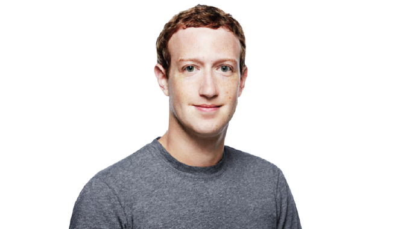
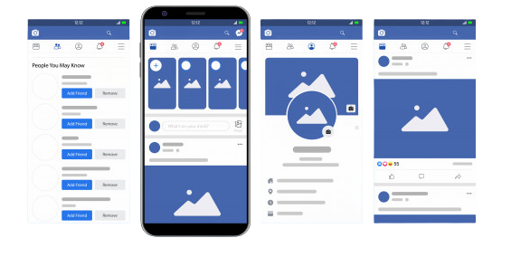
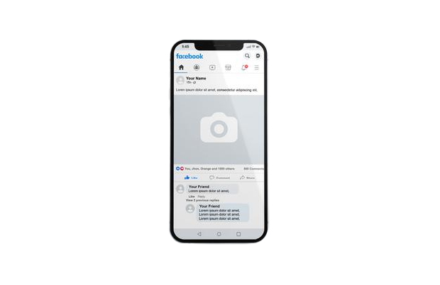
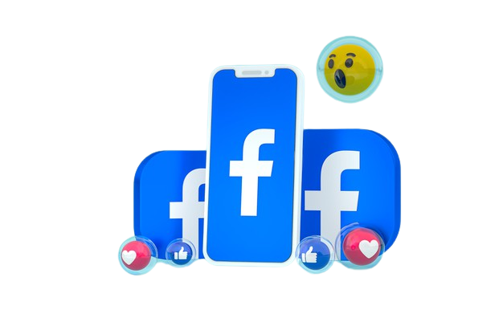
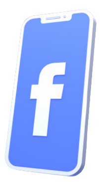
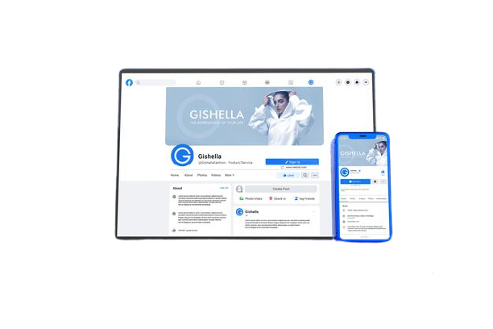
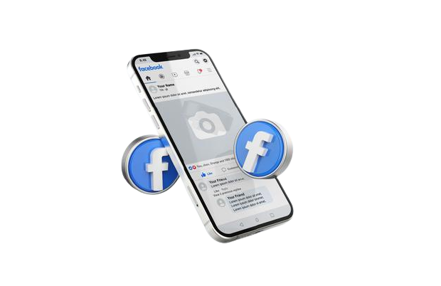

|
Социальная сеть Facebook– крупнейшая в мире, ежемесячная аудитория которой достигает 2 млрд пользователей. Ресурс был основан Марком Цукербергом и его друзьями во время обучения в Гарвардском университете в 2004 году. Официально социальная сеть принадлежит компании Facebook Inc., которая также владеет сервисами WhatsApp и Instagram. |
 |
|
|
Профиль – личная страница человека. Там его фото, видео и посты, которыми он делится с другими Группа – это сообщество, где пользователи общаются между собой только по заданной теме. Группы используют как для личных, так и для маркетинговых целей. Для бизнеса это хороший инструмент, чтобы донести нужную информацию до целевой аудитории. Плюс группы в том, что доступ в нее можно ограничить. Страницы общедоступны, они создаются компаниями или людьми, чтобы рассказать о какой-то теме: товаре, услуге, событии или даже о музыкальной группе. Страницы чаще создают для бизнес-целей. Функционал страниц продуман так, чтобы компании или люди могли быстро донести информацию до большого количества людей. |

Кнопка «Нравится»- проявление одобрения к понравившейся записи. Например, одному человеку понравился пост другого.
Пост – публикация в социальной сети.
Стена – пространство внутри личного профиля, где пользователь размещает посты, текстовые, с фотографиями или видео. Также на стене помещают понравившееся посты других пользователей.
Лента новостей – раздел профиля, где пользователь видит новости со страниц друзей или сообществ, на которые он подписан.
Друг – пользователь, добавленный в список друзей по взаимному согласию.
|  |
Автоматические правила Очень полезный функционал как для новичков, так и для профи, который позволяет эффективнее работать с таргетированной рекламой. Больше аналитики Facebook предоставляет расширенную статистику по рекламным кампаниям, а это помогает эффективнее работать с рекламой. |
|
Связь с инстаграмом Мы любим, когда с одного кабинета можно управлять продвижением в разных соцсетях (поэтому сделали такой удобный сервис). Связь инстаграма и Facebook позволяет делать рекламные кампании, собирать статистику и анализировать все в одном кабинете. Масштаб Facebook по праву можно считать крупнейшей социальной сетью мира. Если верить официальной статистике, более 800 миллионов человек уже зарегистрировали там свои аккаунты. Что примечательно, 750 миллионов заходят к себе на страницу ежедневно. Практически каждая крупная компания или фирма, особенно из тех, которые выходят на международный рынок, считает своим долгом завести представительство в Facebook. Если говорить о русскоязычной аудитории этой социальной сети, то она пока не превышает 6 миллионов, но стабильно растет с каждым годом. |

|
|  |
Русскоязычная версия Facebook существует уже почти 10 лет, однако до сих пор её популярность в России — одна из самых низких в Европе. Социальная сеть до сих пор отстаёт по количеству своей аудитории в России от «ВКонтакте», Instagram и даже «Одноклассников».Многим кажется, что дело в непривычном интерфейсе и слабой коммуникации между российскими пользователями и пользователями из других стран. Однако, у социальной сети Марка Цукерберга есть недостатки, которые бьют по её популярности в России и в мире гораздо сильнее. Непрозрачная политика хранения данных. Ежегодные скандалы с утечкой данных пользователей стали для социальной сети реальностью ещё несколько лет назад: только в декабре 2019 года данные 267 млн пользователей Facebook оказались в открытом доступе. В 2018 году «утекли» данные более 50 миллионов пользователей. Именно регулярность этих утечек и непрозрачный механизм работы с персональными данными пользователей привели к тому, что Цукербергу в 2018 году пришлось 10 часов отвечать на вопросы в Конгрессе США по поводу того, каким образом собираются данные пользователей и как они хранятся.Заявление руководства США в 2013 году о том, что АНБ имеет доступ к данными пользователей Facebook за пределами США так же не добавило репутации для социальной сети. Совсем недавно Стивен Кинг публично заявил об удалении из Facebook ради сохранения в безопасности своих личных данных. Однако, на этом недостатки не заканчиваются – ведь утечки личных данных, наличие доступа к ним у государственных органов – на данный момент являются реальностью и для других ведущих социальных сетей в России. |
|
Fake-news, цензура и политика модерации. В модерации как таковой нет ничего плохого: никто не осуждает Facebook за то, что с помощью как искусственного интеллекта, так и сотрудников-модераторов, соцсеть противодействует распространению порнографии, сцен насилия, издевательств над животными, угроз и так далее. Однако эти меры не помогают Facebook в полной мере противостоять фейковому контенту: в августе 2019 года BBC писал о примерах распространения фейковых вирусных новостей, сомнительной рекламы в социальной сети. Совсем недавно был скандал с фейковой рекламой от мошенников от имени Юрия Дудя.Когда публикации в социальной сети касаются политики, то вопросов возникает еще больше: сам Цукерберг после президентских выборов США признавал, что проблема fake-news существует. После этого он был подвергнут критике как от Трампа, так и от его же противника Джорджа Сороса: они оба обвиняют Facebook в распространении фейков, влияющих на политическую реальность. |
 |
|  |
«Умная лента» Наверно самой яркой иллюстрацией того, как может работать «умная» лента в Facebook является история Карин Вайнио. Её друг долго болел смертельной болезнью, но алгоритм социальной сети не показывал ей и другим его друзьям новости об этом: от момента сообщения о госпитализации до самой его смерти. Действительно, несмотря на попытки Facebook делать открытыми механизмы работы отдельных алгоритмов ленты, в целом пользователи так и не могут понять, почему некоторые их посты становятся популярными, а некоторые получают охват в 1-2% от аудитории друзей на личной странице.Возможно именно поэтому в русскоязычном Facebook нет как известных и сильно популярных сообществ (как «Вконтакте»), так и блогеров (как в Instagram). Непредсказуемость алгоритмов делает практически невозможным вещание на большую аудиторию на регулярной основе. |
|
Ограничения интерфейса. Совсем недавно Facebook обновил дизайн, сделав свой интерфейс интуитивно понятнее и логичнее. Многим русскоязычным пользователям интерфейс соцсети казался неудобным на фоне пользования тем же «Вконтакте». Однако, не только внешний вид делает соцсеть не в полной мере удобной для русскоязычных пользователей: мессенджер Facebook существует для мобильных устройств как отдельное приложение и не добавляет удобства в пользовании соцсетью, а «весит» почти столько же, сколько само приложение Facebook. Устройство просмотра новостей групп так же оставляет желать лучшего и для русскоязычных пользователей остаётся непривычным и неудобным. Локализация. Часть интерфейса на английском языке. |
 |
Чего ожидают подписчики Facebook?
Пользователи «Facebook» в большинстве случаев — это люди в возрасте 25—45 лет, которые занимают хорошие должности, развивают собственный бизнес или работают на фрилансе. Прежде всего их интересуют:
Аудиторию «Facebook» не заинтересует прямая и скучная реклама. Они чувствуют, когда их пытаются обмануть, и обычно не задают вопросы в сообщения групп. Поэтому, чтобы успешно продвинуть сообщество в «Facebookе», нужно любить свой продукт и заботиться о подписчиках.
Facebook подходит не только для общения, но и для бизнеса. Крупные мировые бренды активно занимаются продвижением и продажей в соцсети. Аудитория соцсети предпочитает качественные и интересные услуги, бизнес-услуги, премиум-товары. Лучше не предлагать дешевые некачественные товары и товары для подростковой аудитории. Отдельно запрещено рекламировать и продавать алкоголь, наркотики, оружие, порнографию – все, что запрещено законом.
Соцсеть предлагает следующие возможности для бизнеса:
Главный инструмент для управления рекламными ресурсами – Facebook Business Manager. Это специальный аккаунт для ведения бизнеса, владелец которого управляет приложениями, страницами и рекламными аккаунтами, загружает каталоги продуктов, создает публикации, добавляет способы оплаты. Одно из преимуществ – уровни доступа можно передавать как коллегам и сотрудникам, так и агентствам-партнерам.
Виды рекламы:
Оплачивается реклама тремя способами:
Чем хорош Facebook для бизнеса: